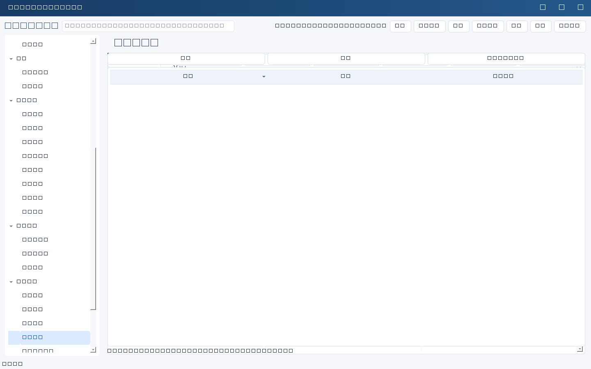

一致性备份计划
在“周期计划”里把类型选为 backup：填写频率（每天/每周/每月）、时区、小时与分钟（月计划按 28 日以内计算，避免月末歧义）、保留份数与备份范围说明。启用后由服务进程按点执行，生成 SQLite 在线一致性备份到服务端数据目录的 backups 下。
- 系统设置→系统与导入导出→“备份健康与保留建议”，查看是否正常、最新备份时间、错过的备份时刻、最近计划备份记录。
- “保留建议”只给清单，<strong>不会自动删除任何文件</strong>；确认无误后由你按公司政策手工清理。
- 服务停止期间错过的时间点最多按一次补做，不堆叠重复备份。
- 恢复流程见备份恢复章节：停服务、验证备份、再替换。
恢复演练建档
演练完成后在“备份恢复”模块登记：演练日期、范围、结论（通过／部分通过／失败）、实际耗时、实际数据缺口、证据与整改任务。系统会据此提示“距上次演练已超过 N 天”，并把演练记录纳入链条的验证阶段。演练结论必须由人确认，软件不会替你判定恢复能力达标。
大数据量时的检索
当已加载记录超过 1000 条，业务列表自动切换为服务端检索与分页：关键词、责任人、状态与日期条件发送到服务，只回传当前页（每页100条）。此时：
- 列表上会明确显示当前为服务端分页模式；
- 工作台、体检、图表仍基于最近一次完整刷新的数据，不是分页子集；
- 需要全量数据时请减少数据量或分批处理，不要假定本地已加载全部记录。
边界：计划备份保证“按点生成备份文件”，不保证异地存放、不变介质或保留期合规；附件目录不在数据库备份内，需要单独备份。自动清理备份文件是有意关闭的，避免误删唯一副本。


